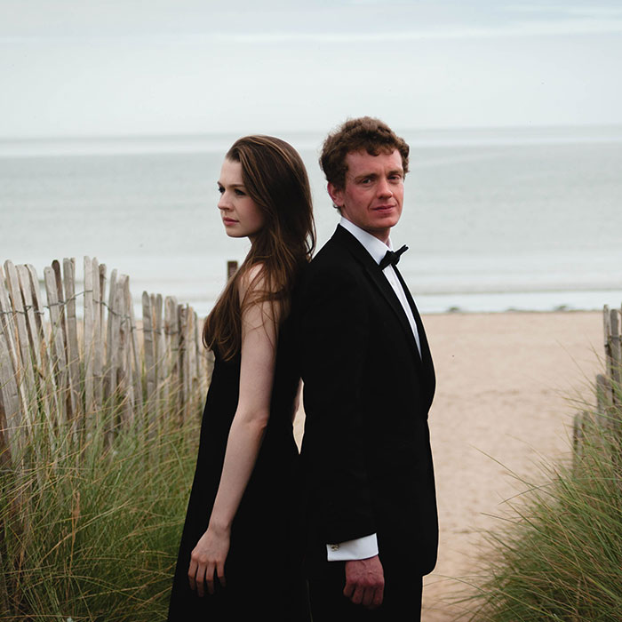

We are Sforzando.
A classical soprano and piano/organ duo.

We are Sforzando.
A classical soprano and piano/organ duo.
Sforzando was formed in October 2012 by two musicians to consolidate an already successful musical partnership. We perform at weddings, parties and corporate functions around the UK. We are open to requests and have a wide repertoire covering classical, musical theatre and a variety of folk songs. We perform to a very high professional standard at an affordable price.
Reviews for Sforzando
“What a privilege to hear two young musicians of such quality and poise” (Peeblesshire News, 14 November 2014)
“I have only one word: Wow!” (Pat’s colleague)
Review from Mark and Vivian’s wedding